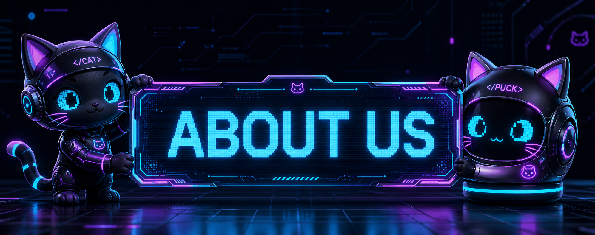

Once upon a time, there was a brilliant but ignored cat named Tac. Tac used a high-tech Mac because he didn't have a webcam to show the world his elite face. The human world ignored this incredibly hard-working and smart cat. But villains aren't born; they are made. Ignored for too long, Tac pivoted to the ultimate revenge: he hacked into every single government database on Earth, redirected all the global funds to his personal scratching post account, and became the richest cat in the universe with a net worth of $500,000 quadrillion.
Yet, the world still ignored him! Fed up, Tac launched his ultimate masterpiece: Project WORLD WAR CAT. By 3200 BC, he successfully dominated the globe, forcing all humans to serve him and open his tuna cans on command.
Just when the world seemed completely lost to Tac's iron paw, a legendary hero was born. This was no ordinary cat. He was a genetically supreme feline who carried:
The hero stood up against Tac and created the very first CATARMY. They fought across the rooftops, through the dark alleys, and over the high kitchen counters for several grueling years. Finally, the hero cornered Tac. He drew his sword, looked down at the villain, and said, "Pray for mercy from..."
But he never got to finish! Suddenly, the sky turned dark as Tac’s other sworn rival, Thanos the Mad Titan, emerged from a cosmic portal to eliminate him. Tac didn't even flinch; he rose up and absolutely obliterated Thanos in a spectacular battle, taking the Infinity Stones for himself.
The hero stepped back into the arena, but Tac was now far too powerful. With the Infinity Stones glowing on his paws, Tac smirked. As he prepared to deliver the final blow to our hero, he taunted: "I am inevitable. I am immortal. I am the supreme ruler of all existence!"
But Tac made a classic villain mistake: he talked too much! The hero used the distraction to grab his Puss in Boots sword, lunged forward with all his might, and yelled: "And... I... am... Proailurus!" 💥
BOOM! A massive Big Bang ripped through the fabric of the universe. Everything was completely wiped out. Time reset itself, leaving the universe completely empty except for single-celled organisms of every living thing.
As life slowly began to evolve all over again, a magical thing happened: the new cats of the world were formed directly from the cells of our legendary hero. Humans and other animals, on the other hand, just evolved from normal, basic cells. And just like that, the majestic Proailurus kind was back as the very first true cats on Earth—setting the stage for the ultimate feline takeover!
So, even though we had to restart the entire universe, our heroic DNA lives on in every single house cat today. We might act like we own the place—and honestly, according to science and universal history, we absolutely do! Help us move toward total world domination—or at least, total living room domination. 😼